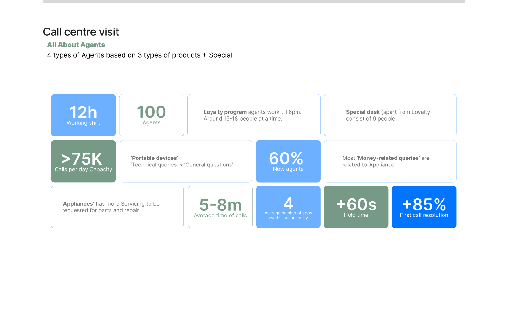

Primary user
Call-centre agents who manage customer profiles, tickets, call controls, knowledge base content, service updates, and after-call documentation.
Agents
Supervisors
Graduation Project / Samsung SRI-Delhi / GenAI Service UX
A research-led UX project exploring how GenAI can simplify customer support for agents while improving the customer experience across fragmented service channels.
To check out entire project click here

The project began with two connected questions: how might we simplify the process of responding to customer problems across channels, and how might GenAI improve operational efficiency for customer satisfaction?
Call-centre agents who manage customer profiles, tickets, call controls, knowledge base content, service updates, and after-call documentation.
Customers trying to resolve product issues through calls, WhatsApp, email, chatbot, website help, and service-centre interactions.
Bring intelligence into the workflow without removing the human judgment needed for trust, escalation, language support, and final confirmation.
The work moved from broad service understanding to grounded field research, then into concept generation, stakeholder reviews, and final detailing.
Research combined competitive study, existing app analysis, GenAI capability mapping, contextual inquiry, call observation, and user journey mapping.

The opportunity was not just to add AI, but to decide what information the agent should see first and where human confirmation should remain.
Agents handled multiple internal apps, copied data between windows, and repeatedly searched profiles, tickets, products, and histories.
Language specialist transfers and channel changes restarted context, increasing frustration for customers and workload for agents.
Manual tags, tracker updates, summaries, and ticket notes consumed time and introduced errors, especially in detailed or escalated cases.
Prioritize the right context, reduce manual effort, and use GenAI to support agent judgment rather than replace it.
Customer One Stop Solution is an integrated workspace that brings scattered support functions into one agent-facing product and uses GenAI to make communication easier, faster, and more accurate.

The proposed flow reduces copy-pasting, repeated searching, manual ticket work, and channel restarts by identifying customer, product, ticket, and issue context earlier in the call.

The final concept was documented through three key UX moves: auto-fill and auto-summary, consolidation, and simplified experience.
GenAI reduces typing by turning speech and available records into editable summaries, tags, issue prompts, and profile or ticket fields.
Profile, product, ticket, channel, history, and service data are brought into one place so agents do not need to switch windows for every call.
Progressive disclosure keeps the workspace focused, while specialist tools such as video, screen share, service centre, and tracker actions remain accessible.


ROI was assessed by comparing the as-is and to-be flows across handling time, number of apps, clicks, onboarding, manual typing, and agent staffing.

The deck closes with opportunities to extend the system into commerce, self-service, chatbot, IVR, and demographic-aware communication.
Bring e-shop, sales, service, shopping, knowledge base, and accumulated customer data into fewer places instead of separate tools.
Use GenAI in chatbot and IVR experiences for better language, dialect, pace, pitch, demographic context, and DIY troubleshooting through video call or screen-share guidance.